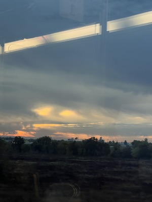

The image Kat shared is from when she went to her favorite band in Concert 2 summers ago. The composition and color palette drew me in. The photo itself seems to be alive. The more mysterious aspects to me was the band itself. I have never listened to their music so it incited me to learn more about them.
test 123
Kat works in live entertainment so this experience has more depth than what meets the eye. I think adding notes about the overall set design and what she sees in the technical aspects onto the photo would be a cool way to shine light on that part of her life.
my photo

last week's sunrise on the amtrak
This image is one I took during my commute to school last week. I take the Amtrak 5x a week, meaning I leave early enough to see the sunset and sometimes take photos. I began an archive of these journeys.
This archive tells a lot about a part of my every day life. This particular photo was important because I associated it with a negative memory I had later that day. The user would never know this from looking at the photo alone. I found this connection between a static image and another memory interesting enough to explore and conceptualize for my next site. I want to make the photo more compelling by playing around with blending modes and microinteractions, perhaps writing over the image as well.
Visual thinking strategies are key to inciting interest and for users to have deeper connections with the information.
Images can be interpreted in various ways depending on the viewer's lived experiences, and it is better to create compositions that better promote space for conversation in their work.
Using images and interaction in a website can be a space for self-expression and deeper immersion of user experience. However, there are constraints when it comes to accessibility and how those images can possibly viewed in different spaces around the world (internet speed etc.)
This site by Flabbergast is visually stunning, but the images are slow to load when the interactions are being performed, even with 3 bars of wifi connection, reducing the quality of my experience.
This article particularly focuses on the importance of form structure. Survey exhaustion often occurs due to poor form layout and information architecture.
Some notes of interest for me were the importance of asking the important questions first and creating a single column. Both of these tasks reduce cognitive load on the user and the survey is more likely to be completed.
Airbnb's modal to choose a language and region is clean and fulfills all the necessary aspects of designing a successful modal.
This article was interesting to me because of the amount of individuals who view modals and overlays as a negative aspect to the experience. I personally enjoy when modals are utilized by a site as they are so versatile in their uses.
To make a modal more useful, the necessary aspects of close: title, button label, size, and shadow are key. I found shadows to be especially important as it avoids too much information being shown at once.
I particularly enjoy Duolingo's onboarding due to the simplicity in questions, use of mascot to guide, and the progress bar at the top. These aspects make the experience more immersive.